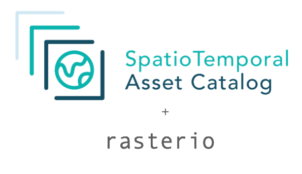

Home

From Metadata to Pixels
About¶
rio-stac-io is a rasterio extension to open STAC Items, ItemCollection / ItemSearch results, and STAC‑compliant geopandas GeoDataFrames (for example from STAC GeoParquet), using native GDAL drivers including STACIT, STACTA and GTI. The library is build on top of rasterio and pystac.
Installation and System requirements¶
You can install rio-stac-io using pip:
pip install rio-stac-io
When using the GTI driver you will need to install the gti extras. Your GDAL binaries also need to be compiled with geoparquet support.
pip install rio-stac-io[gti]
Please note that GDAL STAC support changes between different versions. For best support we recommend building rasterio against GDAL 3.10.2 and higher.
Usage¶
open ¶
open(items: Annotated[ItemCollection | ItemSearch | GeoDataFrame, 'STAC Items must implement the Projection STAC extension'], mode: Literal['r'] = 'r', *, asset_key: str, use_gti: Literal[False] = False, merge_collections: bool = False, infer_projection: bool = False, max_items: int = 1000, collection: str | None = None, crs: str | None = None, resolution: Literal['AVERAGE', 'HIGHEST', 'LOWEST'] = 'AVERAGE', overlap_strategy: Literal['REMOVE_IF_NO_NODATA', 'USE_ALL', 'USE_MOST_RECENT'] = 'REMOVE_IF_NO_NODATA') -> STACITDatasetReader
open(items: Annotated[ItemCollection | ItemSearch | GeoDataFrame, 'STAC Items must implement the Projection STAC extension'], mode: Literal['r'] = 'r', *, asset_key: str, use_gti: Literal[True] = True, sort_field: str | None = None, sort_field_asc: bool = True, filter: str | None = None, resx: float | None = None, resy: float | None = None, srs: str | None = None, minx: float | None = None, miny: float | None = None, maxx: float | None = None, maxy: float | None = None) -> GTIDatasetReader
open(items: Annotated[Item, 'regular STAC Item'], mode: Literal['r'] = 'r', *, asset_key: str) -> rio.DatasetReader
open(items: Annotated[Item, 'uses tiled-assets STAC extension'], mode: Literal['r'] = 'r', *, asset_key: str, zoom_level: int | None = None, whole_metatile: bool = True, skip_missing_metatile: bool = True) -> STACTADatasetReader
rio-stac-io accepts a pystac Item, ItemCollection or ItemSearch,
or a STAC-compliant geopandas.GeoDataFrame (same item layout as
stac-geoparquet, e.g. from
geopandas.read_parquet on STAC GeoParquet), and returns a rasterio
DatasetReader.
Input items will be merged into a single layer,
similar to a VRT and served as a single rasterio Dataset.
If you need to read time series,
consider using ODC STAC
that will return an multi-dimensional XArray object instead.
from pystac_client import Client
import rio_stac_io as stacio
client = Client.open(...)
search = client.search(...)
with stacio.open(search, asset_key="data") as src:
data = src.read()
Drivers¶
rio-stac-io will determine which driver to use based on your input data.
By default, it will use the STACIT driver for all
ItemCollection and ItemSearch inputs.
If you set use_gti=True, it will use the GTI driver instead.
When provided with a single Item as input, it will use the
STACTA driver if the item uses the tiled-asset STAC extension
and rasterio when using a regular item.
For a STAC-compliant GeoDataFrame, the flow is different: the GTI
driver is tried first, then STACIT is used if GTI fails (e.g. GDAL
without GeoParquet, or GDAL too old for GTI). The use_gti argument is
ignored for GeoDataFrame input. The merge_collections and
infer_projection arguments only apply to the STACIT fallback; on the
GTI path GTI always merges across collections and reprojects on the fly,
so those flags are no-ops there (a warning is emitted when GTI is
selected and a non-default infer_projection/merge_collections was
passed).
See overloaded function signatures for details.
STACIT¶
The GDAL StacIT driver accepts pystac ItemCollections or ItemSearch as input and will return a rasterio Dataset, similar to a VRT. This driver is used by default when using a ItemCollection or ItemSearch as input.
STAC Items must use the STAC Projection extension, providing metadata about CRS used, projected bounds and Affine transformation. Items without this metadata will be ignored.
By default, STACIT will split items from different STAC collections
or with different projections into subdatasets.
You can force the driver to return a single dataset
by either filtering by CRS or Collections or telling it
to merge all collections setting merge_collections=True.
If you need to merge items using different projection consider using the GTI driver instead.
While the StacIT driver only fully supports STAC v1.1.0
Items starting with GDAL 3.10.2, rio-stac-io will assure
backwards compatibility also for earlier GDAL versions.
GTI¶
Similar to STACIT, the GDAL GTI driver accepts pystac ItemCollections or ItemSearch as input and will return a rasterio Dataset, similar to a VRT.
The GTI driver requires GDAL version 3.10 or later and GDAL must be built with (geo)parquet support.
In addition, rio-stac-io needs to be installed together with the gti extras.
Because of the extra dependencies, this driver is not the default and users
must opt into it by setting use_gti=True.
Unlike STACIT, GTI will always combine input items into a single rasterio Dataset.
Items in different projections will be reprojected into the projection of the first item.
The user can also set a different output projection by setting the srs argument.
STACTA¶
The GDAL StacTA driver accepts a single STAC item that implements the tiled-assets STAC extension. The driver is designed to open gridded data that are stored following the TMS specifications (i.e., Z/X/Y file path). All data will be loaded lazily.
When using GDAL versions prior to v3.8.x, the driver expects all tiles of the Tile matrix to be present.
Later versions will try to use the STAC Raster extension
metadata (if present) to infer datatype and no data value. When using sparse tiles you must set skip_missing_metatile=True.
STAC Item¶
A regular STAC Item can be opened directly with rasterio.
GeoDataFrame (STAC GeoParquet and compatible tables)¶
You can pass a GeoDataFrame as long as its rows are STAC items in the layout produced by stac-geoparquet (top-level item fields, assets, properties, and geometry). Typical sources are geopandas.read_parquet(...) on STAC GeoParquet, or stac_geoparquet.to_geodataframe(...) from a list of item dicts.
For a GeoDataFrame, the library always tries the GTI driver first, then falls back to STACIT if GTI cannot be used (for example GDAL without GeoParquet support, or GDAL < 3.10 for GTI, or a GDALVersionError from the GTI path). The use_gti argument to open is ignored for this input type—there is no way to request STACIT only; the fallback is automatic. The gti extra (rio-stac-io[gti], which brings in stac-geoparquet and friends) is required to convert a GeoDataFrame into a dataset.
Filter or subset the frame before calling open—only the remaining rows are used as the mosaic input.
import geopandas as gpd
import rio_stac_io as stacio
# e.g. STAC GeoParquet on disk or URL understood by geopandas/fiona
gdf = gpd.read_parquet("stac_layer.parquet")
# Example: keep one collection and a spatial subset (requires a geometry column)
gdf = gdf[gdf["collection"] == "my-sentinel2-collection"]
gdf = gdf.cx[-5:10, 41:52]
with stacio.open(gdf, asset_key="data") as src:
print(src.profile)
data = src.read()
The collection field exists when items were written with a collection id; use any valid boolean indexing that preserves STAC item columns. If you only need tabular fields, a simple filter is enough:
gdf = gpd.read_parquet("stac_layer.parquet")
gdf = gdf[gdf["id"].isin({"item-a", "item-b"})]
with stacio.open(
gdf, asset_key="cog", merge_collections=True, infer_projection=False
) as src:
_ = src.bounds
See also the overloads in rio_stac_io.open for GTI- and STACIT-specific options passed through to the underlying drivers.